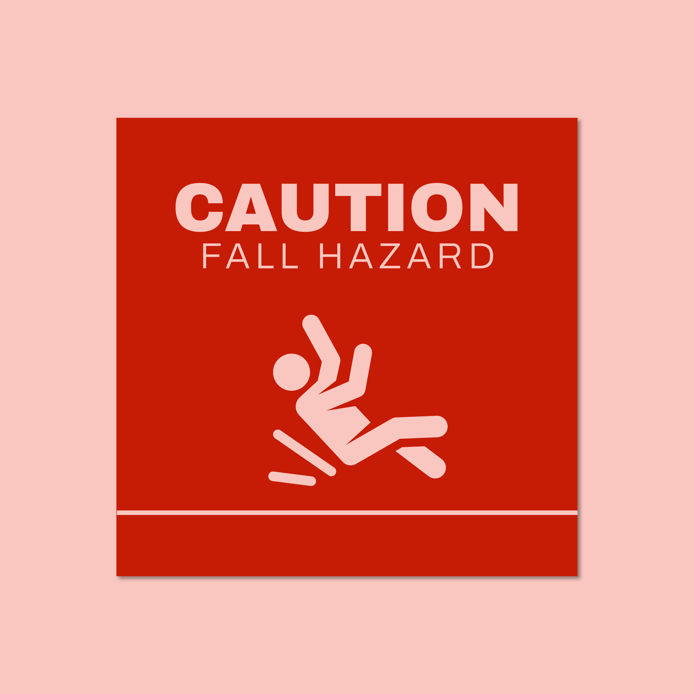

Wellness Check-Ins
Phone, text, video, or scheduled in-person check-ins to see how the client is doing and to notice concerns early.

Family Updates
After visits or check-ins, simple updates can be shared with approved family contacts for peace of mind.
Companionship Support
Conversation, emotional support, presence, and light household support to make the day feel calmer and less lonely.

Care Technology Help
Help families and clients use phones, tablets, video calls, calendars, and caregiver communication tools.

Fall-Risk Observation
Look for obvious household risks such as clutter, rugs, poor lighting, or unsafe conditions and alert the family.

Hospice Family Support
Non-medical sitting, emotional support, family communication, and caregiver relief for families already working with a licensed hospice provider.